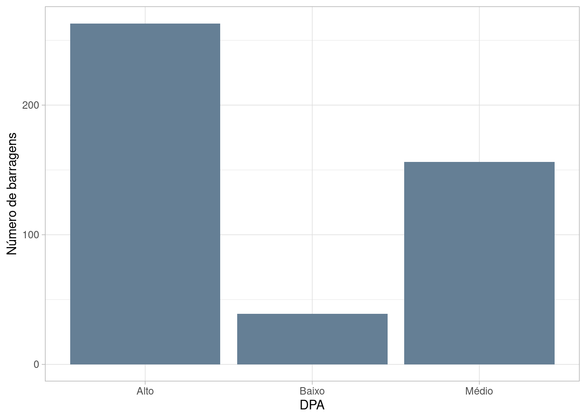

Barragens de mineração
O Sistema Integrado de Gestão de Segurança de Barragens de Mineração (SIGBM), gerenciado pela Agência Nacional de Mineração (ANM), disponibiliza dados sobre as barragens de mineração no Brasil.

Existem 920 barragens cadastradas no SIGBM.
Segundo Leão e Santiago (2022), ……
Gráfico

Tabela
| UF | Quantidade de barragens |
|---|---|
| MG | 345 |
| MT | 167 |
| PA | 114 |
| BA | 79 |
| SP | 67 |
| RO | 35 |
| GO | 22 |
| AP | 18 |
| MS | 17 |
| AM | 15 |
| SC | 14 |
| TO | 8 |
| RS | 5 |
| PR | 3 |
| SE | 3 |
| MA | 2 |
| PI | 2 |
| RJ | 2 |
| AL | 1 |
| PB | 1 |
Referências
Leão, Suiane Rodrigues, e Alvany Maria dos Santos Santiago. 2022. "Cenário das barragens de rejeito: conhecer para evitar novas catástrofes". Ambiente & Sociedade 25. https://doi.org/10.1590/1809-4422asoc20210066r1vu2022l2ao.